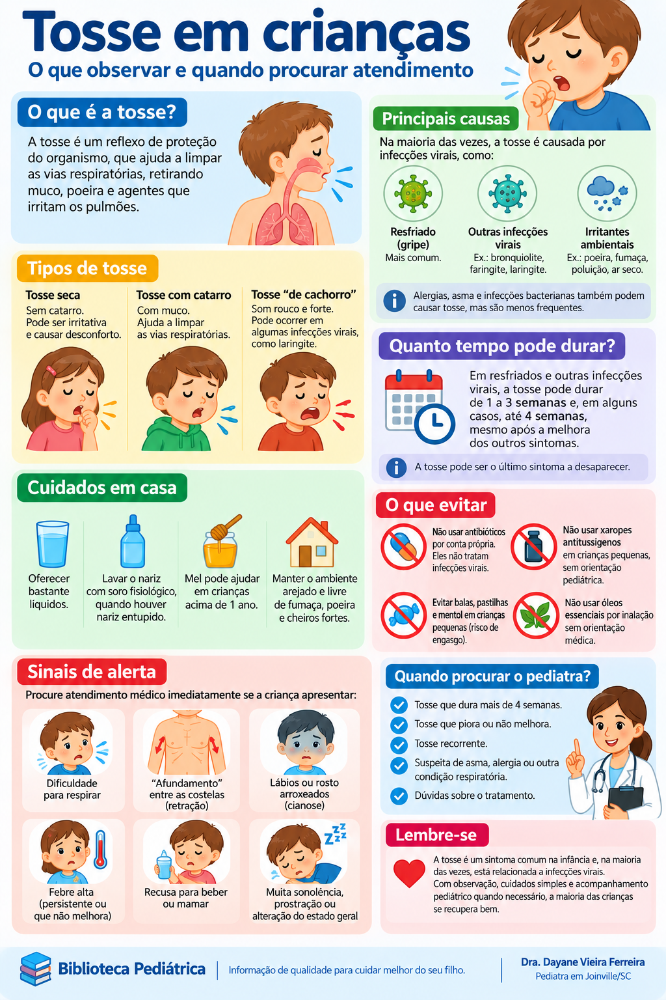

Tosse em crianças
A tosse costuma ser um mecanismo de defesa. Veja o que observar, quais cuidados simples podem ajudar e quais sinais indicam necessidade de avaliação médica.
Respiração, estado geral, hidratação, idade e sintomas associados ajudam a entender quando é preciso procurar atendimento.
Por que a criança tosse?
A tosse ajuda a proteger e limpar as vias respiratórias. Em quadros agudos, resfriados e outras infecções virais das vias respiratórias estão entre as causas mais comuns. Uma tosse aguda pode levar algumas semanas para desaparecer completamente.
O que observar?
Cuidados gerais em casa
- Ofereça líquidos com frequência e mantenha a amamentação quando aplicável.
- Evite exposição à fumaça de cigarro e outros irritantes respiratórios.
- Observe a evolução da criança e procure orientação se houver piora importante.
- Não use antibióticos, broncodilatadores, corticoides ou outros medicamentos por conta própria para uma tosse comum.
⚠️ Sinais de alerta
Procure atendimento com prioridade se a criança apresentar dificuldade para respirar, esforço respiratório importante, coloração azulada, ficar muito sonolenta ou pouco responsiva, tiver convulsão, não conseguir beber/mamar ou apresentar piora importante do estado geral.
Uma tosse que começou após um episódio de engasgo também merece avaliação, pois pode estar relacionada à aspiração de um corpo estranho.
E se a tosse continuar?
A tosse aguda associada a infecções respiratórias costuma melhorar espontaneamente e pode persistir por até 3–4 semanas. Se não estiver melhorando nesse período, persistir além do esperado, piorar ou vier acompanhada de outros sinais preocupantes, a criança deve ser avaliada.
Antibiótico resolve?
Nem toda tosse precisa de antibiótico. Infecções virais são causas frequentes de tosse aguda, e antibióticos não devem ser usados rotineiramente nesses quadros. Quando existe suspeita de pneumonia ou outra infecção bacteriana, a decisão sobre tratamento depende de avaliação clínica.
Infográfico: tosse em crianças

Fontes
Conteúdo elaborado com base em recomendações do NICE sobre tosse aguda e em materiais da Organização Mundial da Saúde sobre pneumonia e sinais respiratórios na infância. Antes da publicação definitiva, o conteúdo deve passar por revisão médica editorial.
Importante: este material é educativo e não substitui consulta, diagnóstico ou avaliação médica individualizada.